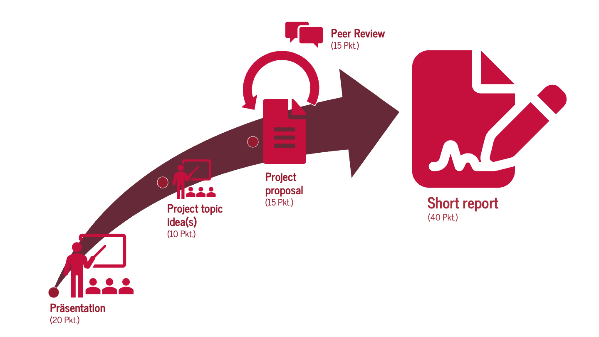
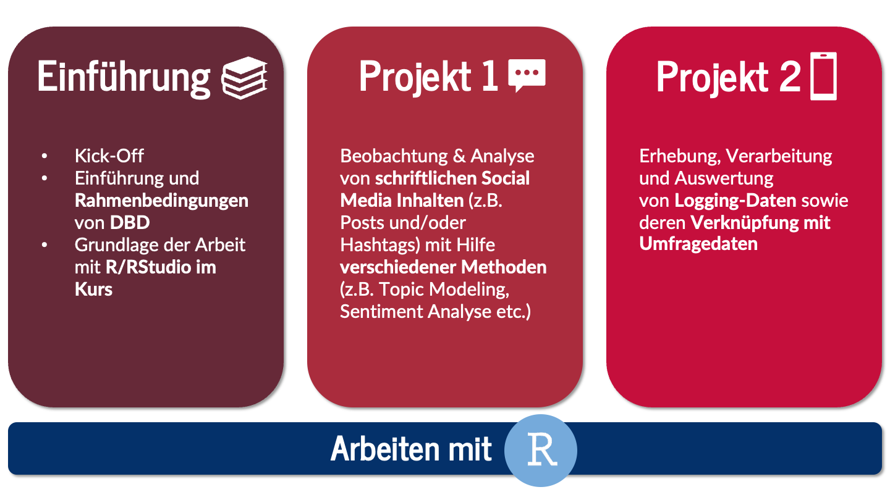
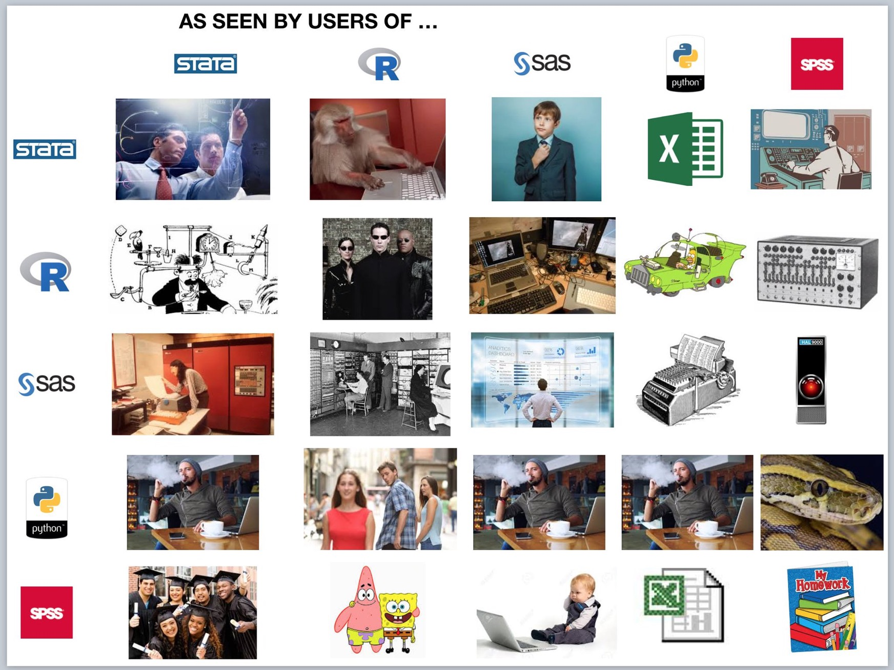

| Session | Datum | Topic | Presenter |
|---|---|---|---|
Introduction |
|||
1 |
25.10.2023 |
Kick-Off |
Christoph Adrian |
01.11.2023 |
🎃 Holiday (No Lecture) |
||
2 |
08.11.2023 |
DBD: Overview |
Christoph Adrian |
3 |
15.11.2023 |
🔨 Working with R |
Christoph Adrian |
📂 Project 1 |
Analysis of media content |
||
4 |
22.11.2023 |
📚 Digital disconnection |
|
5 |
29.11.2023 |
📦 Data collection methods |
|
6 |
06.12.2023 |
🔨 Text as data |
|
7 |
13.12.2023 |
📊 Presentation & Discussion |
|
8 |
20.12.2023 |
Buffer Session |
|
🎄Christmas Break (No Lecture) |
|||
📂 Project 2 |
Analysis of media usage |
||
9 |
11.01.2024 |
📚 Media habits & routines |
|
10 |
18.01.2024 |
📦 Data donation methods |
|
11 |
25.01.2024 |
🔨 Working data logs |
|
12 |
02.02.2024 |
📊 Presentation & Discussion |
|
13 |
08.02.2024 |
🏁 Recap, Evaluation & Discussion |
Christoph Adrian |
Kick-Off
Session 01
25.10.2023
Agenda
- Kurze Vorstellungsrunde
- DBD - A very short introduction
- Organisation & Koordination
print("Hello course!")
Christoph Adrian
- B.A. und M.Sc. Sozialökonomik @ FAU
- Text as Data & Social Media Usage (Effects)
- Fließend in R, Grundkenntnisse in Python, SPSS & Stata
Und nun zu Ihnen!
Vorstellungsrunde
- Wie heißen Sie?
- Was und wo haben Sie im Bachelor studiert?
- Was studieren Sie aktuell?
- Welches soziale Netzwerk/Medium haben Sie letzte Woche am meisten genutzt und warum?
DBD - A very short introduction
Definitionsversuch, Lernziele und FAQ
Was verstehen Sie unter Digital Behavioral Data?
Interaktive Session
Bitte scannen Sie den QR-Code oder nutzen Sie folgenden Link für die Teilnahme an einer kurzen Umfrage:
Temporary Access Code: 2677 1451
Ergebnis
Ein Definitionsversuch von DBD
nach Weller (2021)
… fasst eine Vielzahl von möglichen Datenquellen zusammen, die verschiedene Arten von Aktivitäten aufzeichnen
… können dabei helfen, Meinungen, Verhalten und Merkmale der menschlichen Nutzung digitaler Technologien zu erkennen

Lernziele
Die Studierenden werden …
- einen Überblick über die zentralen Möglichkeiten von DBD und die damit verbundenen Herausforderungen bei der Datenerhebung und -aufbereitung bekommen
- lernen die Stärken und Schwächen verschiedener Methoden zur Erhebung von DBD bewerten
- zentrale Anforderungen an Datenschutz, Forschungsethik und Datenqualität kennen und verstehen lernen
- zentrale sozialwissenschaftliche Methoden zur Analyse von DBD kennenlernen
- das Wissen über DBD, Statistik und Datenanalyse in eigenen kleinen Projekten zu üben und anzuwenden
Aber was ist mit …. ?
Kurzes FAQ mit häufig gestellten Fragen
Welchen Vorkenntnisse sind für den Kurs vorausgesetzt? Interesse an sozialwissenschaftlichen Perspektiven auf Medien, Kommunikation und digitale Technologien & Grundkenntnisse in der Arbeit mit Statistikprogrammen (z.B. R, Python, Stata, SPSS)
Werden wir praktisch mit Statistikprogrammen arbeiten? Ja. Dazu werden wir R bzw. RStudio nutzen.
Deswegen: Bitte 💻 mitbringen!
Werden wir die mathematische Grundlagen der vorgestellten Methoden lernen? Ja und Nein. Der Kurs konzentriert sich in erster Linie auf die Anwendung; einige mathematische Parameter der vorgestellten Methoden werden jedoch für die Anwendung benötigt und deswegen kurz erörtert.
Kursorganisation & -koordination
Kommunikation, Prüfungleistungen, Aufbau & Ablauf
Different tools for different tasks
Kursorganisation & -kommunikation
- Github-Kursseite: Informationen zu Kurs (Semesterplan, Syllabus, Prüfungleistungen etc). & Sitzungen (Slides, Literatur und ggf. Übungsmaterial)
- Zulip: Wichtige Ankündigungen, asynchrone Unterhaltungen, Fragen zum Kurs & zu R
- StudOn: Kursmaterialien, ggf. Beispieldatensätze und Präsentationsaufnahmen
- E-Mail: persönliche Anliegen
No Ghosting, please!
Ärgerlicherweise gibt es Studierende, die sich anmelden und betreuen lassen, aber dann einfach irgendwann (teilweise sehr kurzfristig) “verschwinden”.
⚠️ Nehmen Sie bitte kein Thema an, wenn Sie nicht teilnehmen wollen/können!
⚠️ Die „Prüfung” bzw. die „Prüfungszeit” bei einem Seminar beginnt mit der Bearbeitungszeit und damit mit der Ausgabe des Themas an die Kandidaten (bei 24h Bedenkzeit/Rücktrittsrecht)
What is expected
Leistungsanforderungen & Prüfungsleistungen
Regelmäßige Teilnahme
mindestens 80% der Sitzungen
max. 2 unentschuldigte Fehltermine
Portfolio
- Verschiedene Teilleistungen (ins. 100 Punkte)
Schritt für Schritt zum Ziel
Das Portfolio im Überblick
Ausführliche Informationen zu den einzelnen Portfolio-Elementen finden Sie auf der Kursseite unter Assignments.
👥 Präsentation
💡 Theoretische & methodische Grundlage für das Mini-Projekt
- Umfang: maximal 30 Minuten
- Ziel: Überblick über das Thema der zentralen Texte geben, z.B. zentrale Begriffe, Definitionen und Merkmale der jeweiligen Plattform, Methode und/oder des Tools
- Literatur wird zur Verfügung gestellt
Bessonderheit: vorheriges Feedbackgespräch
👥 Project topic idea(s)
💡 Projektidee vorstellen & weiterentwickeln
Umfang: maximal 10 Minuten & 5 Slides
Ziel: Idee für Gruppenprojekt präsentieren, offene Fragen klären und Zeit für Diskussion & Feedback
Raum für Fragen und Austausch zwischen den verschiedenen Projektgruppen
Bessonderheit: Einzige Leistung, die für beide Projekte erbracht werden muss.
👥 Project proposal
💡 Erster Entwurf des Written short report
- Umfang: mindestens 500 Wörter
- Ziel: Forschungsfrage (weiter-)entwickeln und verschriftlichen sowie frühzeitige Entwicklung einer spezifischen Analysestrategie
- Fokus auf drei “Abschnitte”: Einleitung, Datengrundlage und methodisches Vorgehen
Bessonderheit: Grundlage für das Peer Review
👤 Peer Review
💡 Feedback für Bericht geben & bekommmen
- Umfang: Durcharbeiten eines Peer-Review-Formulars
- Ziel(e):
- Lernen, andere Projekte zu bewerten und konstruktives Feedback zu schreiben
- Zusätzliches Feedback über das eigene Projekte erhalten, dass für den finalen Written short report berücksichtigt werden kann
Besonderheit: Individuelles Assigment!
👥 Short Report
💡 Zusammenführung der einzelnen Teileistungen
- Umfang:
- 750 bis 1000 Wörter pro Person umfassen.
- Bei einem Gruppenbericht skaliert die Anzahl der Wörter mit einem Faktor von 0,8 pro Person (z. B. sollte eine Zweiergruppe 1200 bis 1600 Wörter schreiben, eine Dreiergruppe 1800 bis 2400 Wörter).
- Ziel(e):
mindestens eine der vorgestellten Methoden oder Daten verwendet, um ein Thema Ihrer Wahl zu erforschen.
Kenntnisse der in diesem Kurs behandelten Themen (und darüber hinaus, wenn Sie möchten!) unter Beweis stellen und diese auf einen Datensatz anwenden, um ihn auf sinnvolle Weise zu analysieren.
Besonderheit: Abgabe als Quarto-Dokument (& PDF)
Any questions?
Drei Themenblöcke
Struktur und Aufbau des Seminars
About R …
Trust the process
Der Einsatz von R bzw. RStudio im Kurs
Warum?
- Kostenlose Software mit vielen nützlichen und beginner-friendly Tutorials
- R or Python? Both!
Im Kurs:
Bestehende R-Kenntnisse sind förderlich, aber nicht zwigend notwendig, wichtiger sind praktische Erfahrung im syntaxbasierten Arbeiten
Learn to code by example: Code von Sitzungen & Beispielen wird bereitgestellt (ggf. durch Showcases)
Pflicht: Basiskurs R/RStudio der FAU
Nützliche Quellen auf Kursseite unter Computing
Theorie meets Praxis
Projektarbeit in Kleingruppen
Durchführung von zwei Miniprojekte (📁) mit je vier Sitzungen:
- 📚 Theoretische Grundlage aus der Kommunikationswissenschaft
- 📦 Zentrale Methode der Datenerhebung im Kontext des Miniprojektes
- 🔨 Vorstellung & Anwendung von Methoden & Analysestrategie
- 📊 Vorstellung & Diskussion von Projektideen
💡 Idee:
- Wissen aneignen ➞ anwenden ➞ teilen/präsentieren ➞ diskutieren 🔄
Typische Session
für 📚, 📦 & 🔨: Erst Präsentation, dann Vertiefung
Präsentation (ca. 30-45 Min)
Umfasst eine bzw. Ihre Präsentation (inkl. Zeit für Fragen und Diskussionen)
Option auf weitere, offenere Diskussion im Kurs
Group Activity (ca. 45 - 60 Min)
kleine Gruppenarbeiten zur Vertiefung
variiert abhängig vom Thema der jeweiligen Sitzung
Beispiele:
Anwendung von Tool/Methode mit anschließender kritschen Diskussion
Erstellung eines einfachen Forschungs- oder Analysedesign
Typische Session
für 📊: Pitch ➞ Diskussion ➞ Repeat
Project topic idea(s) (ca 5-10 Min)
- kurzer Überblick über Thema, Forschungsfrage oder Motivation & ausgewählte Daten(teil)stichprobe (2 Folien),
- kurze Beschreibung von Methode und (geplanter) Analyse (1 Folie)
- Ergebnisse und/oder eine Herausforderung aufzeigen, die im Kurs diskutiert werden soll (2 Folien).
Fragen & Diskussion (ca 5-10 Min)
- Zeit für Fragen, entweder von der Gruppe an den Kurs oder umgekehrt.
🔁 für jede Gruppe
(Vorläufiger) Seminarplan
Talking about disconnecting
Projekt 1: #digitaldetox auf sozialen Medien

Projektaufbau
Theoretische Hintergrund: Digital disconnection
Analyse von Social Media Post mit #digitaldetox
Archiv-Daten (Twitter) oder eigene Datenerhebung
Fokus auf Inhalt (Diskurs, andere Hashtags) oder “Akteure”/Accounts
Studying problems, not problematic usage?
Projekt 2: Mediennutzungsgewohnheiten und Wohlbefinden
Projektaufbau
Habitualisierte / routinemäßige Mediennutzung
Erhebung, Aufbereitung und Analyse von Logging-Daten
Eigene Erhebung, Data Download Packages, API-Zugang
Fokus auf Datenerhebungs & -aufbereitungsprozess
Was meinen Sie?
Let’s discuss a little
Please state your preference
Vergabe der Präsentationsthemen
Bitte scannen Sie den QR-Code oder nutzen Sie folgenden Link und geben Sie Ihre Themenpräferenz an:
Let’s spin the wheel?!
Zuteilung der Präsentationsthemen
| Session | Datum | Topic |
|---|---|---|
4 |
22.11.2023 |
📚 Digital disconnection |
5 |
29.11.2023 |
📦 Data collection methods |
9 |
11.01.2024 |
📚 Media habits & routines |
10 |
18.01.2024 |
📦 Data donation methods |
Before we meet again
Hinweise und offene Fragen
Hinweise:
- Lernen Sie die Kursseite & Zulip kennen! Und checken Sie die Infos () zur nächten Sitzung.
- Bis zum 13.11.: Basiskurs R/RStudio durcharbeiten. Bitte senden Sie das Kurszertifikat an christoph.adrian@fau.de
Fragen:
- Why no English? 🤷
- Haben Sie noch Fragen?
Bis zur nächsten Sitzung!
Literatur
Weller, K. (2021). A short introduction to computational social science and digital behavioral data. https://www.gesis.org/fileadmin/user_upload/MeettheExperts/GESIS_Meettheexperts_Introductioncss.pdf